Think canvas
Think is the spatial thinking surface in the Hanji desktop preview, alongside Document and Plan. A canvas holds ideas and discussion, with links to those products. The code, the launcher and the data files keep the name whiteboard. Think reads the workspace's data folder, the one Document and Plan use: a think mount holds canvases, one per folder that holds a board.md, at the top of the mount or inside folders of canvases, and /b/<mountPath>/<path> opens one by its path from the mount (/b/boards/design/crit). The header shows the canvas's title, which Canvas settings renames.
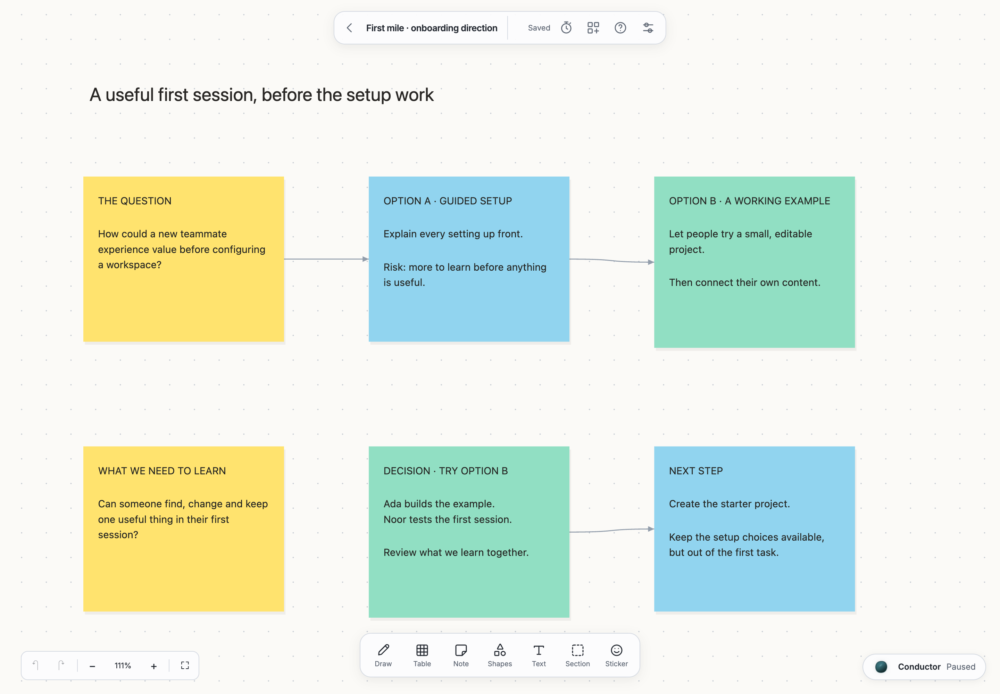
Open a canvas
In the desktop preview, select Think, open a folder and choose New canvas. An empty folder offers that action directly. A workspace created with Start fresh already has a canvas folder. Canvas settings, templates, a shared timer, voting and shortcut help are available from the floating header.
The preview is shared by invitation; it is not a hosted service or a public binary release. Desktop workspace covers installation and the workspace shell.
Run from an existing checkout
From a checkout containing packages/whiteboard, after the workspace dependencies are installed, register a folder of canvases as a think mount of your data folder, then start the server:
node scripts/whiteboard-build.mjs
pnpm hanji add-mount boards /path/to/boards boards --local --kind think
node --import tsx packages/whiteboard/src/main.ts --port 4104
HANJI_DATA_DIR names the data folder, ~/.hanji by default: the same folder gives Think the workspace's people and grants. Think's server, when it runs in a terminal, prints the owner's access link (http://127.0.0.1:4104/#key=…), which opens the list of canvases; key --owner-link prints it again. The key stays the same across restarts until key --rotate-owner. Treat the link as a credential: it holds the owner's access to every canvas. Opening it signs the browser in for thirty days, the same session length as Document; the key itself is not stored in the browser. --demo builds a throwaway workspace under the temporary folder with one seeded canvas of fictional notes, for a first look and for the handbook figures.
Every canvas carries the conductor panel at its bottom right corner, the same conversation as in Hanji Document and Hanji Plan; see The conductor. Ask conductor on an object or selection opens a contextual draft asking for a clearer structure and connections. It preserves an existing draft and waits for you to send. The canvas, the selected objects and the visible area go with each message; a change the conductor makes lands on the canvas as you watch, with Show and Undo on its row.
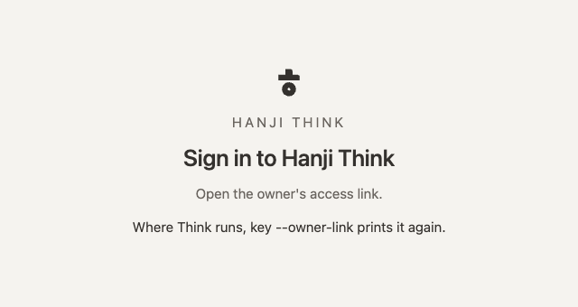
A canvas folder, and each folder of canvases on the way to it, is one name of letters, digits, dashes, underscores or dots (no dot first), spelled exactly as the folder is: another letter case or Unicode form of the same name is no canvas. Folders nest eight deep at most. Think binds loopback. On a tailnet, the login that tailscale serve sends signs people in, and each person sees the canvases their grants allow; see On your tailnet and Permissions.
The list at /b/<mountPath> shows the canvases you can read. An editor of the whole mount sees New canvas: a title, and a folder suggested from it as you type (lowercase, dashes for anything that is not a letter or digit, at most 100 characters), make <folder>/board.md in one commit as you; edit the folder to choose your own. A suggested folder that is taken gets -2, -3 and on, and Launch taken makes launch taken too. A canvas's address can end with #n=<id> to open it with that object selected. Signed out, a canvas's address shows the sign-in card, and an address with no canvas there says so with a link to your canvases. The list is headed Canvases when you see one mount of canvases, and by each mount's name when you see several; each canvas shows its title with its folder under it. A folder name or title that is refused brings the form back with the reason beside the field it is about, that field marked and focused, and what you typed kept. A title of spaces asks for a title, and a title is at most 200 characters. A folder name that is already taken is refused with "That folder is taken. Pick another name.", so an editor of the whole mount can learn that a canvas exists there without reading it; the owner chose who edits the whole mount. The list’s Activity action opens the workspace journal filtered to canvases. Activity is independent of which products are enabled; every entry still respects the viewer’s access.
Move and make
Drag empty canvas space to draw a selection rectangle without moving the viewport. Shift-drag adds objects to the current selection; Escape or pointer cancellation restores the prior selection. Click an object to select it, or Shift-click to add/remove it. Space + drag, middle-button drag and trackpad scrolling pan; a trackpad pinch zooms the canvas around the pointer, including over floating controls and editors. Browser page zoom is prevented while the canvas is open; ⌘/Ctrl + plus, minus or 0 use the canvas zoom controls. Ordinary panel scrolling stays native. Drag selected objects to move them together. The visible creation dock contains Draw, Table, Note, Shapes, Text, Section and Sticker, without separate Select/Hand tools. N adds a note and starts editing; keys typed right after it, before the server has the note, go into the note when its editor opens. A new object looks for free space beside the selection, then in the visible area, then nearby. Placement checks full bounds, including objects still waiting to save, and reveals the new object without changing the zoom. Hover outlines preview what a click will select; multiple selected objects share an outer outline. Shift-drag an object to move along one axis. A click on a selected member selects it alone; dragging it keeps the group. Escape clears the selection when no editor or gesture is active. Esc or Done closes the editor at once while the text saves; if the server refuses it, the editor opens again with your text. A text box closed with nothing in it is removed. Stickers are movable, proportionally resizable objects. The “Collection 01” catalog contains 40 original vector designs for emotions and work states. EN/KR switches the same catalog between English and Korean. Search matches either language and design keywords; Clear restores the full catalog and unmatched searches show an empty state. The picker remembers its language locally. Right-click a placed catalog sticker to choose English or 한국어, or use its EN/KR action button with keyboard or touch. Language changes preserve the object ID, design, size, position and anchor, and persist the translated label and stickerLanguage through Git. Legacy emoji stickers keep their existing content. Reactions live beside the selected object, outside the creation dock. A selected object's actions and color bar sit in rows above it; when the rows would meet the header or the top of the view, they sit below it. A section's bar sits above the section, or under it, or inside it below its title strip. Keyboard help is in the header beside settings. Drop a sticker with its center over a sticky to attach it. It keeps its relative position when that sticky moves. Drag it onto empty canvas to detach; deleting its sticky leaves the sticker at its current canvas position. F fits the canvas; Shift-F fits selected objects. Arrow keys move selections by 10 pixels, or 50 with Shift. Delete removes selected objects and their connectors. Undo restores the objects, their text, comments, reactions, attachments and connections. Redo reapplies the edit. Escape cancels a drag or leaves the current tool.
Sticky notes resize smoothly from 160px to 800px wide. Drag a corner or focus a handle and use the arrow keys. Height follows the text and width, up to the 2,000px layout limit; long text remains scrollable in the editor. Hold Shift while resizing a shape or text frame to preserve its proportions. Option/Alt resizes around the center. Image and sticker resizing preserves proportions automatically. A size label follows the drag, and Escape cancels it. Each completed resize is one undoable edit.
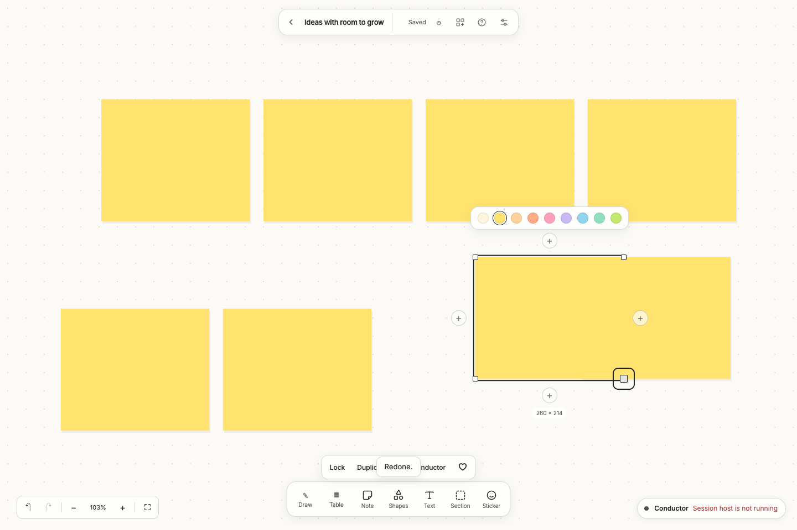
Double-click a note, or press Enter with it selected, to edit styled content directly inside its bounds. Headings, emphasis, links and lists stay formatted while typing; the stored body remains Markdown. This reuses Document’s editor and preserves the original Markdown when the document is unchanged. Done, ⌘/Ctrl+Enter, Escape or leaving the editor waits for live text to save before closing. Editors share ProseMirror steps while typing; remote changes rebase around local changes without resetting the caret. Formatting and local text Undo collaborate too. An unchanged document preserves its original Markdown. If the connection fails, keep the editor open until its pending steps save. A conflicting external body replacement retains your draft and asks you to copy it before reloading. A small formatting toolbar sits above the editor. Choose Normal, H1, H2 or H3 for the caret’s paragraph or selected paragraphs; it does not resize the whole card. ⌘/Ctrl+Alt+0–3 applies the same styles, and applying the same heading shortcut again returns that line to Normal. ⌘/Ctrl+B makes a selection bold, I italic, K a link, E inline code, and Shift+X strikethrough; Shift+8 toggles a bulleted list and Shift+7 a numbered list. Enter continues a list; Enter on an empty list item ends it. Canvas thumbnails render these common inline styles and headings, but are not a complete Markdown renderer. Embedded HTML and images inside a note are inert placeholders while editing.
The sticky settings bar contains only colors. The reaction button sits beside the upper-right edge of the sticky. Select text while editing to reveal a speech-bubble comment action, or use ⌘/Ctrl+Alt+M. The comment stores an explicit quotation of up to 2,000 selected characters; it is not a live text-range anchor. Existing comment counts use the same speech-bubble icon. Comments and replies open beside the object; C opens a general object comment from the canvas. Select an object and drag one of its four subtle + edge handles onto another object to connect them; a nearby target highlights and snaps. Dropping on empty space creates a connected shape of the same type, or a sticky for other objects, as one undoable edit. Escape cancels. Clicking the handle, or pressing L with one object selected, opens a list of objects; choose one to connect immediately. Selecting two objects and pressing L still connects them directly.
Click a connector curve to open a compact style picker. Pattern, weight and endpoint decorations save immediately; there are no From/To fields, Apply or Delete buttons. Tooltips and accessible names describe the icons. Drag either circular endpoint onto another object to reconnect, or click/focus a handle and choose a target from the accessible object list. Shift+L cycles connectors from the canvas; Enter opens style controls. Delete/Backspace on the canvas removes the selected connector only, leaving its objects intact. Style buttons and text editors keep normal keyboard behavior. Handles remain a usable screen size across zoom levels; touch supports dragging and the picker. Endpoints reference stable object IDs and follow movement/resizing, including stickers anchored to notes. Deleting an object removes its incident connectors. Self-links and missing endpoints are rejected. Reconnection preserves the connector ID in Markdown and shared operations. Disjoint edits to opposite ends merge; competing edits or deleted endpoints retain a conflict instead of overwriting another person’s change. Connector controls offer Solid, Dashed or Dotted lines, Fine/Regular/Bold weight, and separate None/Arrow/Dot choices for each endpoint. A new connection remembers the edge it started from. The connector toolbar offers a label of up to 200 characters, curved, straight or elbow routing, and Auto/North/East/South/West attachments for each end. Fixed attachments follow that side when objects move or resize; Auto chooses facing boundaries. Legacy connections retain automatic attachment until explicitly changed. Labels and routing are preserved in Markdown, copy/paste and PNG exports. Delete/Backspace removes selected objects only while the canvas has focus, never from text fields or formatting controls.
Hold Option/Alt before dragging selected objects to duplicate them. Originals remain in place; Escape or pointer cancellation abandons the preview. ⌘/Ctrl+C, then ⌘/Ctrl+V, copies and pastes the selection; pastes and Duplicate (⌘/Ctrl+D) use available space instead of covering the originals. Repeated duplicates include pending creates when finding the next spot. Text editing retains its normal clipboard behavior. Groups preserve layout, styling, media references, attached stickers and connectors entirely within the group, with fresh IDs in one revision. A sticker copied alone becomes independent; copying its sticky keeps it attached to the new sticky. External connectors, comments and reactions are not copied. Clipboard selections are validated and limited to their original canvas, keeping local asset references valid. Reader/commenter roles cannot paste or duplicate. Newly copied objects are selected. Duplication, deletion and other canvas edits participate in general Undo and Redo.
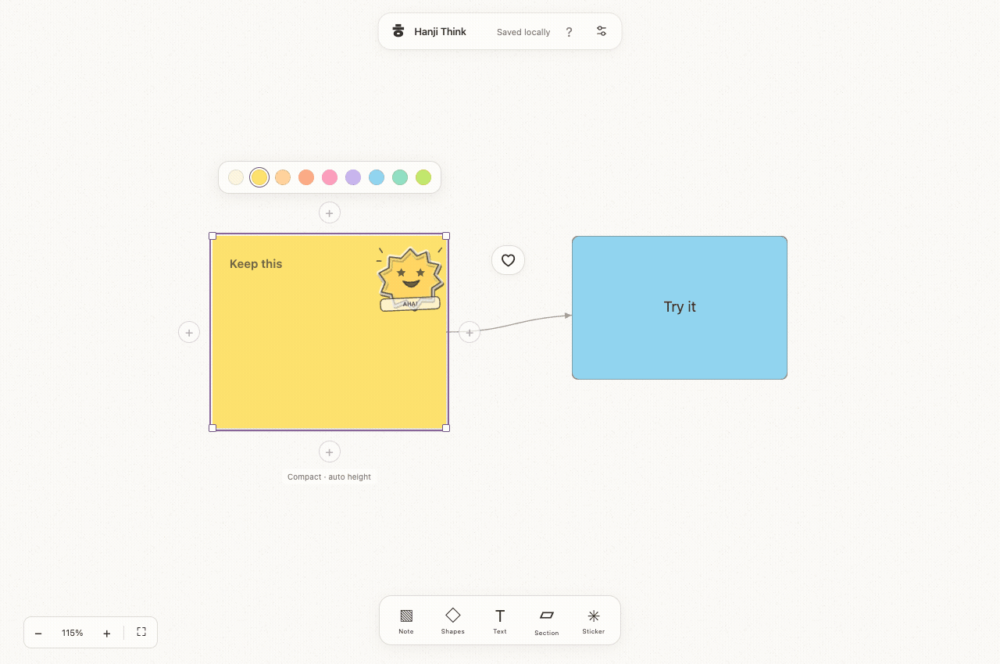
Choose Text (or T) for transparent, standalone Markdown text. Double-click or Enter edits in place using Document’s rich editor. After leaving the editor, its floating style bar offers four local font stacks: Sans, Serif, Mono and Handwritten; sizes 16, 24, 40, 64 and 96; bold/italic; left/center/right alignment; and five dark ink colors. Existing inline Markdown emphasis, headings and links remain available. These are system font stacks with fallbacks, not downloaded or bundled font files, so exact typefaces can differ across operating systems. Resize the text frame with its corners; long content clips to that frame on the canvas and in PNG output, while the editor scrolls. No remote font request or new font license dependency is introduced.
Choose Section to wrap the current selection, including attached stickers, or create an empty frame at the canvas center. Rename it in its floating bar. Drag the title strip or thin border to move the section and its contents; drag inside to select objects normally. Membership is geometric: an object’s entire frame must lie inside the section below its 40-pixel title band. Moving objects in or out, or resizing a section, changes membership. Nested sections travel with a containing section. For overlapping sections, each contains the objects fully inside its own frame; moving either carries those objects. Moving several sections together moves shared objects only once. Attached stickers follow their parent even when they extend beyond the boundary. Connectors keep their stable endpoint IDs and update as objects move. Partial overlaps do not become members. Deleting a section removes only that frame and its incident connectors; its contents remain.
The section bar offers Export…, a menu of PNG at 1×, 2× and 4×, each with its exact pixel size; an item over the limits, or any item while an edit is pending or an export runs, is disabled with the reason under it. The menu takes the arrow keys, Enter and Escape, and gives the focus back to Export… on close. Export renders the section title/frame, contained objects, reactions and connectors whose two endpoints are included, on a warm plain background. It excludes editor controls, cursors, discussion text and connectors going to outside objects. Output is clipped to the section’s rectangle; attached stickers or reaction tiles extending beyond it are clipped, so leave padding. Export waits for fonts and locally stored images to load and reports an error when an image is unavailable. Images use the existing authenticated same-origin asset store; no remote URL is drawn directly, avoiding a tainted canvas. Each output is limited to 8192 pixels per side and 32 million pixels; select a lower scale or resize an oversized section. Readers and commenters can export content they can already read, but cannot create, style, rename, resize or move objects. Export never changes canvas data or writes Git.
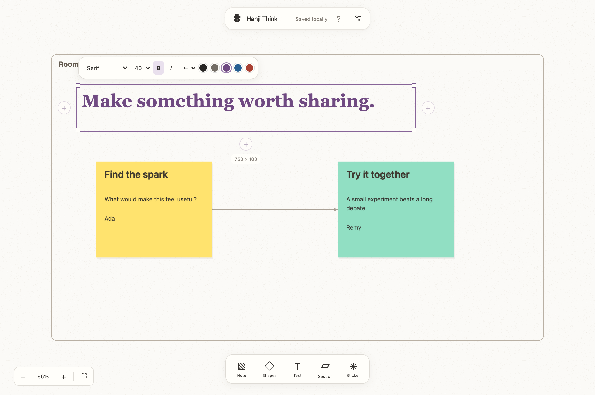
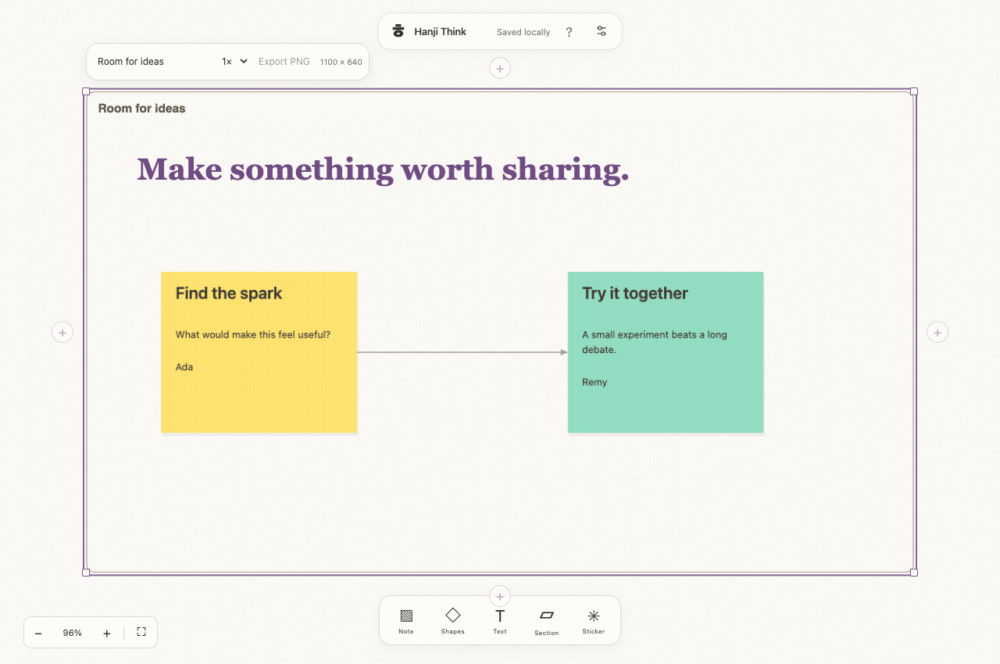
Choose Shapes (or press S from the canvas) for Process, Decision, Start / end, Input / output, Ellipse, Hexagon and Triangle. Click a choice or drag it out of the picker to a canvas position; pointer and touch drags show a preview, and Escape or a drop outside the canvas cancels. Keyboard users can choose with Tab/Enter. These are independent vector objects, not images or stickers. Double-click or press Enter to edit styled text inside the shape; Done or leaving saves it through the existing revision service. The floating color palette works on shapes too. The current shape silhouette sits beside the single-row colors. Open it to choose a visual shape or style icon: filled/outline, solid/dashed/dotted border, or border weight. Choices save immediately, without Apply/Cancel. Shape swaps close the picker; style choices keep it open. Tooltips and accessible names explain every icon; Escape or clicking outside closes the picker. The ID, text, size, comments and attached connectors stay intact; only the chosen field is submitted. Drag a corner to resize width and height independently while keeping the opposite corner fixed. Arrow keys on a focused corner move it by 10 pixels. Escape cancels a drag. Labels stay centered in a safe interior area; long text scrolls while editing and clips to that area when closed, so enlarge the shape to show more. Shape dimensions are explicit, unlike auto-height stickies.
Clicks in a diamond or parallelogram’s empty corners pass through to the canvas. Connector endpoints follow the actual outline as objects move or resize. Shape creation and geometry changes require an editor; comments keep existing commenter permissions. Text and geometry edits can merge independently; competing edits to the same field retain a conflict. Arrows and dots indicate connector direction/endpoints; text labels for Yes/No branches remain deferred.
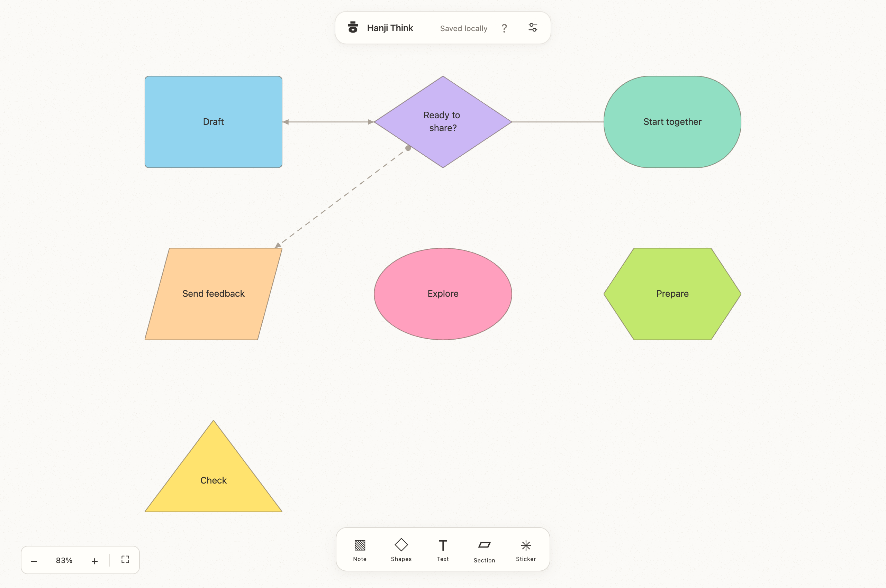
Paste plain text to make a note, or paste a valid HTTP(S) URL to make a dedicated link card with a site monogram, hostname and readable address. A Plan address that opens an issue makes an issue card; see Issues on the canvas below. The local server requests public Open Graph title, description, publisher and image metadata, with Twitter card and HTML-title/description fallbacks; available raster preview bytes are copied into the canvas’s content-hashed asset storage. If metadata or images are absent, blocked or unavailable, the URL-derived layout remains useful. The full card grows with the image frame so the text keeps its space. Open Graph supports image dimensions but does not mandate a universal aspect ratio; 1200:630 is this canvas’s display convention. Cards have no arrow decoration. Double-click a card or use Open link to open it in a separate tab. Credentials in URLs and malformed URLs remain plain text. Preview requests never forward user cookies, access keys or authorization headers. Only HTTP/HTTPS default ports and public addresses are allowed; every redirect is revalidated, DNS answers are checked and the selected address is pinned to the connection. Private, loopback, link-local, reserved and mapped ranges are refused. The service caps redirects at three, HTML at 512 KiB, images at 2 MiB, and a preview attempt at roughly 6.5 seconds, with two simultaneous requests maximum. It accepts no compressed responses, SVG, embedded webviews or scripts. Sites requiring login or JavaScript fall back to the default layout. Existing cards are not fetched again automatically: select one and use Refresh preview. Successful previews are cached in memory for ten minutes, up to 100 normalized URLs (fragments omitted); metadata and downloaded image bytes saved on the card remain durable. URLs containing likely credential/token/signature query parameters are refused before DNS lookup. Cards use a proportional 1200:630 image frame (about 179 pixels tall at the default 340-pixel width), publisher line, up to three title/description lines and a quiet address footer, with no arrow. Paste or drag/drop local PNG, JPEG, GIF or WebP images up to 5 MB onto the canvas; multiple files are supported. Dropped links work too. Paste within the note editor continues to insert text normally. SVG and other media types are rejected; remote image URLs become links rather than being downloaded. Images are stored by content hash in the canvas repository. Select one and drag a corner handle to scale it proportionally; the opposite corner stays fixed. Focus a handle and use Right/Up to grow, Left/Down to shrink, and Shift for a larger step. Escape or pointer cancellation abandons a drag. The final geometry uses the same revisioned operation service as moves, with conflicts retained rather than overwritten. Only geometry changes: original image bytes are preserved. Dimensions stay between 80×60 and 2,000×2,000 pixels while maintaining the existing frame ratio. Stickers are regular Markdown objects with sticker: true, a readable body label and a stable stickerDesign ID (for example sticker-v1-thinking). IDs survive Git checkpoints and agent edits. Artwork is bundled vector code in packages/whiteboard/src/stickers.ts, without remote fonts, emoji dependencies or image downloads. A redrawn design gets a new version, and the collection can grow by adding designs. Stickers saved under the set's first ID prefix load under their current IDs, and the next checkpoint writes the current IDs. Older emoji stickers and unknown design IDs fall back to the body text, including during zoom.
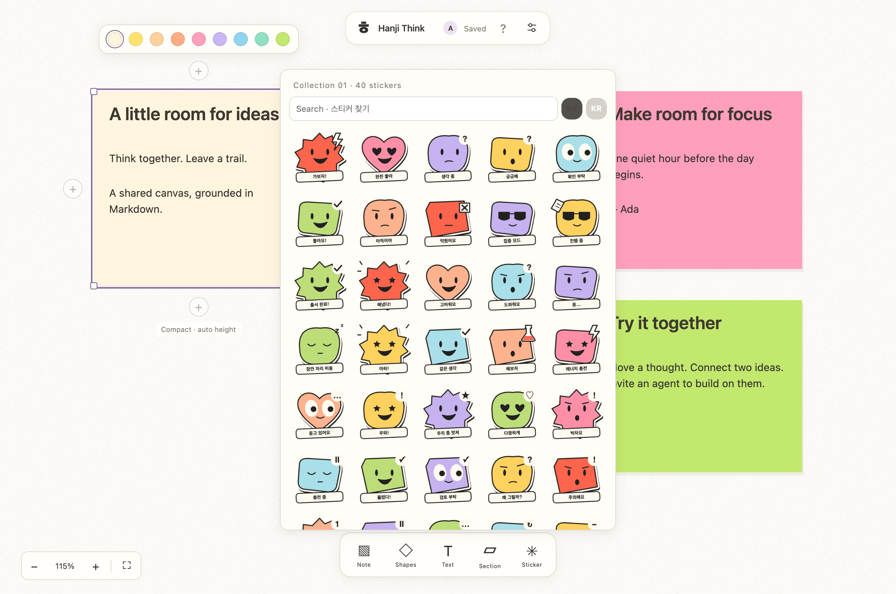
At enlarged zoom, note text, shape outlines and labels, link-card text and vector stickers render directly at the display’s native resolution rather than enlarging cached bitmaps. Raster photos and older emoji artwork retain their source resolution limits.
Tab and Shift+Tab from the canvas move to the next or previous object, panning only when it is out of view and never changing the zoom; past the last object Tab leaves the canvas for the tools. Esc goes to the tools, and ? opens the keyboard shortcuts sheet. The swatches are one radio group: Tab reaches the current color, and the arrow keys move to and choose the next one; each is announced by its name, such as Citron. Sticky and shape colors use one compact row: Oat, Citron, Apricot, Papaya, Guava, Lilac, Pool, Seafoam and Chartreuse, ordered from neutral through warm to cool. A ring marks the selected color; keyboard focus remains visible. The row stays on one line on narrow screens, with dark readable object text. Reactions form one centered, gently overlapping fan beneath the object, including narrow stickers. Emoji order is stable, angles are symmetric and smaller count bubbles are painted above neighboring tiles. The fan stays outside the object content and grows along one row. A short placement bounce and settling wobble stop after 1.2 seconds; reduced-motion preferences use the final static state. Counts combine people without shifting existing slots. The UI respects reduced-motion preferences and keeps floating controls within the viewport. Multi-touch pinch and broad mobile testing remain future work.
Editing and diagramming
Use Undo and Redo beside zoom, or ⌘/Ctrl+Z and ⌘/Ctrl+Shift+Z (Ctrl+Y also works). The last 100 accepted canvas changes are kept for this browser tab and survive reloads. Text fields retain their own editing undo. Server receipts make retries safe; unrelated changes by another person are preserved, while overlapping changes refuse the undo and keep it available. A new edit clears redo. Creating issues and writing documents retain their own separate Undo notices.
⌘/Ctrl+A selects every object while the canvas has focus. With several objects selected, Arrange aligns left, center, right, top, middle or bottom; three or more objects can be distributed horizontally or vertically with equal gaps. Sections move their contents, and attached stickers stay with their parent. Dragging snaps the selection’s outer edges and centers to nearby objects with visible guides; hold Alt during a move to bypass snapping (Alt before starting a drag duplicates).
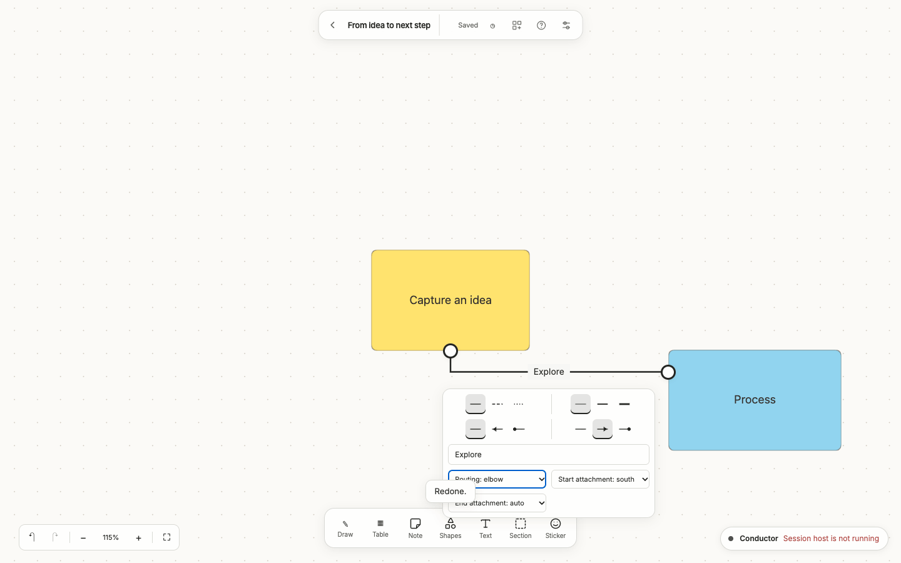
Issues on the canvas
When the workspace has a tracker that you can edit and your name is one of its people:, or you are the owner, a selected sticky offers Create issue in the actions bar above the tools, a selection of several objects shows Create N issues in that bar, and a section's options offer the same for the objects inside it. The dialog says how many stickies become issues and in which tracker, and asks for a project, a status (To do unless you choose another, in the words Plan uses) and an assignee from the tracker's people and its owner, and remembers your last choices in this browser. With several trackers you can edit, the dialog asks which one first, and a pasted key of any of them becomes a card. Each sticky with text becomes one issue: its first line, with its Markdown marks dropped (a mark inside a word, as in user_id, stays) and cut at 120 characters, is the title, the rest of the sticky is the body (starting with that first line as written when the title cut it or dropped a link's address), and source: names the canvas and the sticky. The issues land in one tracker commit as you; the canvas is not written. Images, shapes, sections, cards and blank stickies are skipped and counted. A sticky that already has an issue is reported as already linked, so pressing twice files nothing twice. The notice offers Undo for ten seconds, which cancels the issues that press created, in one commit, while they keep the status the press gave them; a canceled issue no longer counts, so the sticky can be filed again. Agents file the same way with tracker new "<title>" --source board:boards/crit#<id>, which gives back the issue a sticky already has.
A sticky that became a Plan issue wears a chip at its bottom right with the issue's key; the chip is dark while the issue is open and grey once it is done or canceled. Select the sticky and the actions beside it offer Open HNJ-12, which opens the issue in Hanji Plan; a click on the chip does the same. Paste a Plan address that opens an issue (/i/HNJ-12, or a view with ?issue=HNJ-12, on the address in HANJI_TRACKER_URL) onto the canvas to put the issue there as a card: a sticky with an empty body that names the key in its file and wears the chip. When you can file issues in one of the workspace's trackers, an issue key with its prefix, such as HNJ-12, does the same; a word of that shape with another prefix, such as Q3-2026, stays text. A card keeps its chip, grey, once its issue is canceled. You see a chip only for an issue you can read in Plan; a card for an issue you cannot read shows the key as written, outlined, and no Open. Chips are read when the canvas opens, after every change to the canvas and every 30 seconds while the tab is visible, so an issue filed from Document or the terminal reaches the canvas within that time.
Pages from the canvas
When the workspace has a mount of pages that you can write or propose on, a section's options offer Write up, and a selection of several objects shows Write up in the actions bar above the tools. The dialog asks where the page goes (a mount, as a page or as a proposal), a folder, which this browser remembers for the canvas, and a title (a section's name to start with), names the file <yyyy-mm-dd>-<title>.md with the title in Latin letters and digits, and shows the page as it will be written. A title with no Latin letter or digit, such as 회의, names the file <yyyy-mm-dd>-untitled.md. A folder name starts with a letter or digit and holds letters, digits, dots, dashes and underscores. The page starts with the title as a heading. Objects are read in rows, top to bottom and left to right: an object joins a row while its height overlaps the row's. A sticky's text is copied as written; a sticky that became an issue ends with its key in double brackets; an issue card becomes its key in double brackets; a text object is copied like a sticky; a link card becomes its address. A section inside the section or the selection becomes a heading one level deeper with what it holds, after the other objects at its level, so each heading holds only its own objects. Images, shapes, stickers and connectors are left out, and the dialog says how many; a choice with nothing to write cannot be written up. The last line names where the page came from: From the board [[board:boards/crit#<section>|<board title> › <section name>]]. for a section, From the board [[board:boards/crit|<board title>]]. for a selection; see Links.
The page lands in one commit as you, or as one proposal that the mount's reviewers merge in Hanji Document; the canvas is not written. A file already at that path is refused, for a page and for a proposal, so a press never overwrites a page: change the title or the folder. While the dialog is open the preview follows the canvas, and a page that would differ from the one you read is refused with the new page shown. After a page is written, the notice offers Undo for ten seconds, its button or ⌘Z / Ctrl+Z while it shows, which deletes the page in one commit while it is still what you wrote; a proposal has no Undo, and its reviewer rejects it. Once a section has a page that you can read, its options also offer Open write-up. Any page that links the section counts, a meeting note that links it by hand too, and Write up stays for a second page. A selection has no such link.
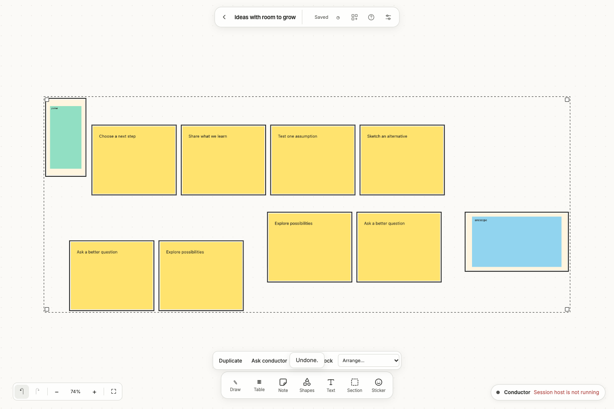
Paste or drop several images to import them as one undoable batch. Think reads each image’s natural dimensions, uses a modest frame up to 320×240 canvas pixels (smaller at high zoom), and finds free space for each file. Very wide or tall media keep a minimum 80×60 frame and are fitted inside it. Existing image content stays unchanged.
See the conductor work
While your conductor uses Think tools on the canvas you are viewing, a badge names its activity and shares the conductor’s selected shape, primary color and state animation. A targeted cursor uses the same shape. The badge reads: Reading canvas, Preparing canvas edit, Waiting for approval, Saving canvas history, or Updated canvas. A labeled agent cursor points to the object or creation position named by the tool call, and dashed outlines mark its target objects. These are tool targets, not a recording of an agent’s physical mouse. A read of the whole canvas has no invented cursor location. Plan outside the current viewport stays in the badge; the indicator does not pan or zoom your view.
Confirmed changes remain highlighted for six seconds, including fast tools that finish between polls. Failed tools and finished turns clear unfinished activity. Missing host access, changes to another canvas, and expired activity draw no cursor. Approval still happens in the conductor. Reduced-motion settings remove cursor transitions and the badge pulse. This display follows your own conductor’s events and requires its session host.
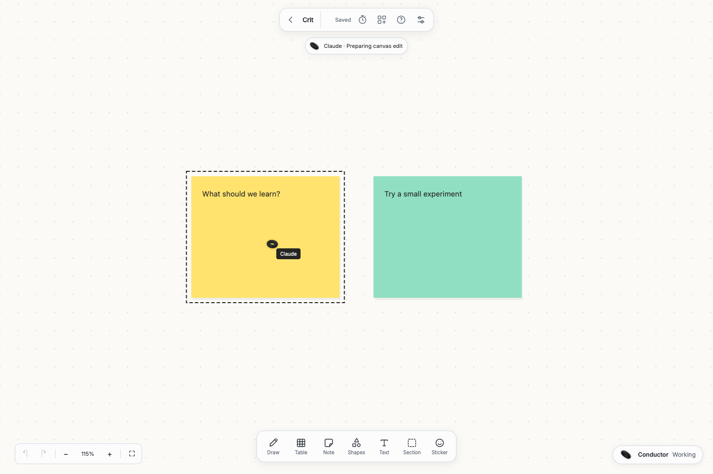
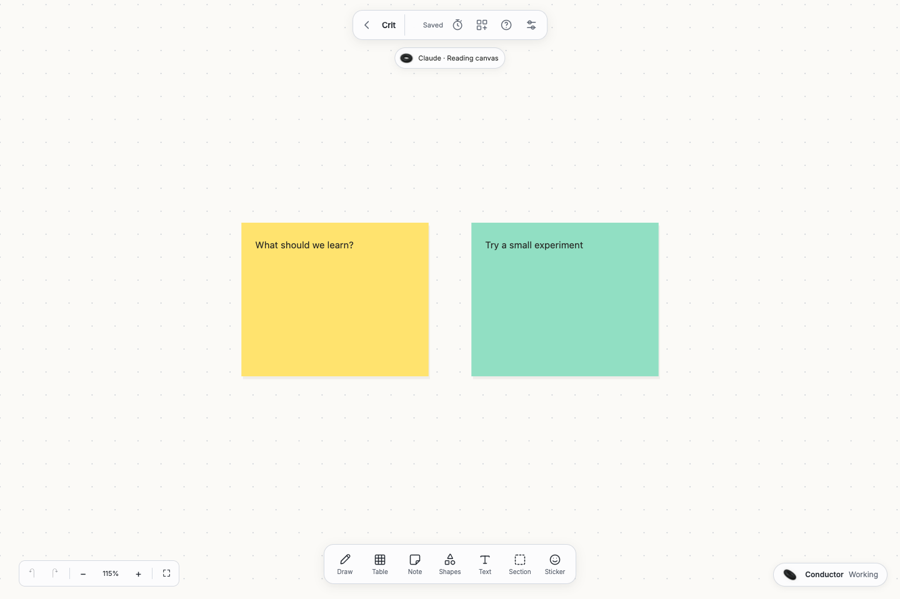
Option-drag displays the copy cursor. Press or release Option during a drag to switch between duplicating and moving.
Groups, resizing and locks
Select several objects and choose Group, or ⌘/Ctrl+G. Clicking a member selects the persistent group, which moves and duplicates as one selection. Ungroup, or ⌘/Ctrl+Shift+G, removes the membership. Groups are flat: regrouping replaces earlier memberships. A copy gets a fresh group identity and starts unlocked. Selecting a section expands its contents and their groups, so grouped objects stay together even when a group straddles a section boundary.
Corner handles on a multi-selection resize all its members in one revision. Proportions stay together by default; hold Shift to resize axes independently, or Option/Alt to resize around the center. Sticky heights still follow their text. Standalone text font sizes scale within the existing 12–120 range. Escape cancels a preview. The normal model size limits still apply.
Lock prevents movement, resizing, text edits and deletion until Unlock. Locks apply to expanded groups and sections and are enforced by the operation service, including stale browser or agent requests. Locked objects remain selectable for viewing, commenting, voting and unlocking. Locks are editing controls, not a new permission boundary against trusted filesystem operators. Lock changes themselves can be undone; other Undo actions must unlock affected objects first.
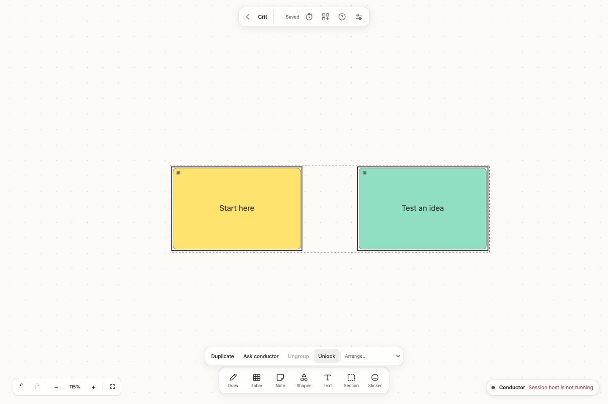
Drawing and tables
Draw opens Pen, Highlighter and Eraser with ink and width controls. Strokes are smoothed canvas objects with normalized points, so they move, resize and duplicate with the canvas. A stroke holds 2–4,000 sampled points. Highlighter uses translucent ink. Eraser removes unlocked strokes that its path touches, as one undoable edit; it leaves other object types alone. Choose Select or Escape to leave drawing mode.
Table adds a 3×3 editable table. Select it to work directly on the canvas. Click a cell, Shift-click or drag to select a range, and double-click or press Enter to edit in place. Arrow keys move between cells; Shift extends the selection. Enter finishes a cell, Tab advances, and Escape cancels the draft. The nearby toolbar adds a row or column after the selected range, clears cells, or deletes selected rows or columns. Delete/Backspace clears the selected cells. At least one row and column always remain. Tables hold up to 20 rows and 10 columns with 2,000 characters per cell. Edits use the normal atomic operation path; competing table-cell changes require resolving a revision conflict. Both drawings and tables participate in PNG export. Write up includes a table’s cells as Markdown and counts drawings as skipped content.
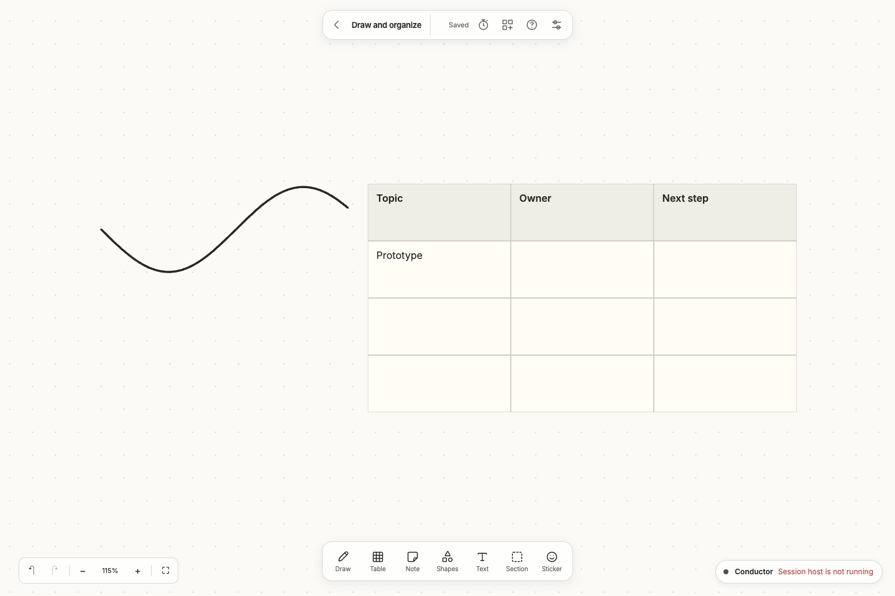
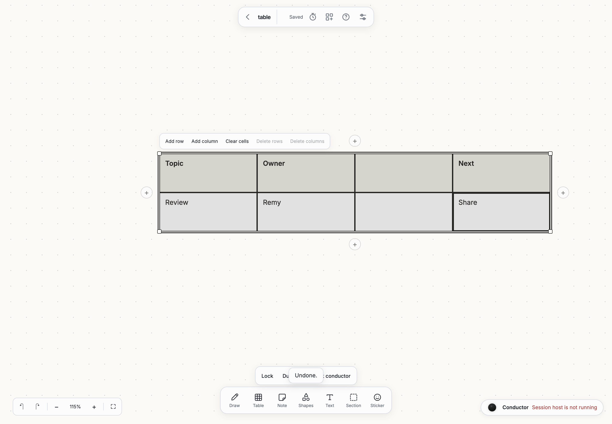
Timers and voting
Open Timer and voting in the top island for an anchored session panel. It keeps the canvas in context, separates Timer from Voting, and closes with Escape or a click outside. Choose a preset or a custom duration before starting. The active status chip reopens the relevant tool. Editors can start a countdown, pause it, resume it and reset it. The deadline is shared and saved in the journal, so reloads and restarts do not restart the clock. The displayed countdown uses the browser clock; it does not write a revision every second.
For voting, choose a title and 1–20 votes per person, then start on the selection or all eligible ideas (up to 500). Editors and commenters use + and − beside each target. Their authenticated identity owns their ballot; the server enforces the total budget and rejects votes after closing. Votes and totals are public throughout the session. End voting keeps the results; Clear results removes them. Vote buttons stay stable while counts update, so a timer tick never takes away focus. Use these controls and vote removal instead of object Undo. A new voting session starts with fresh ballots. Deleting a target removes its votes.
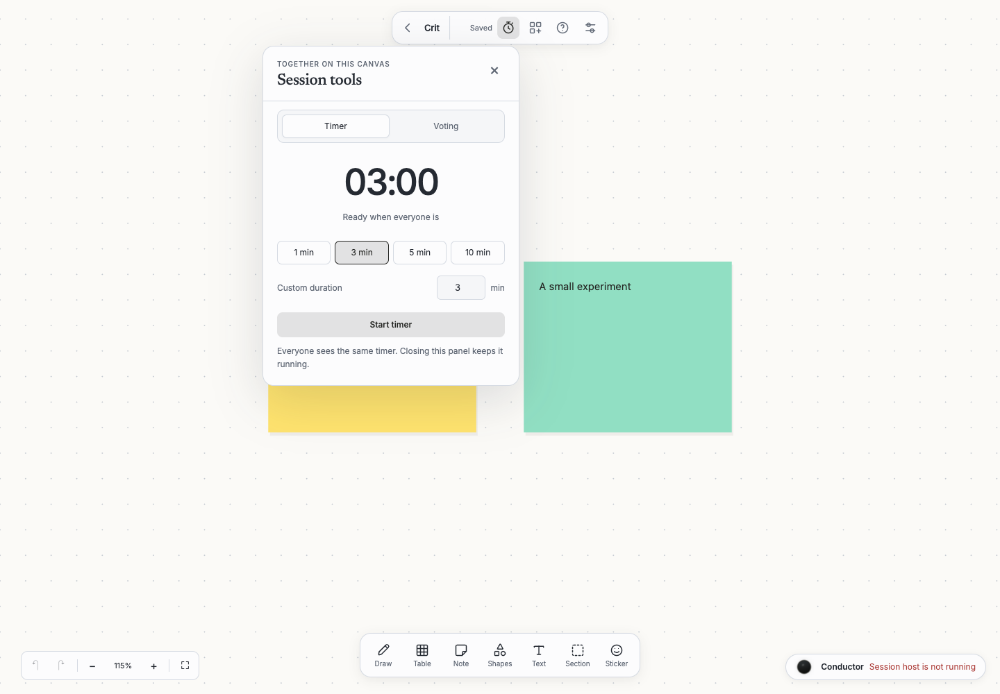
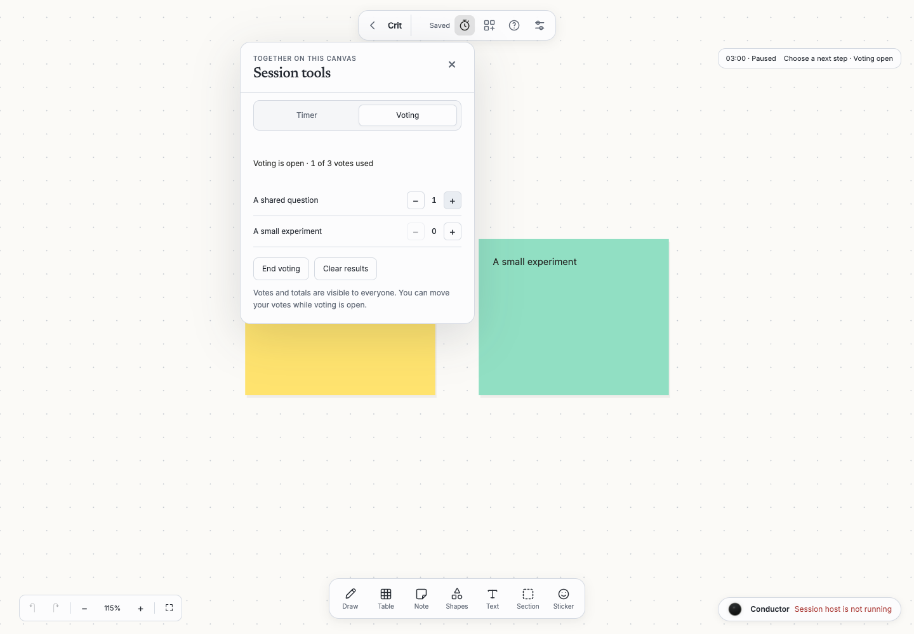
Live text editing
Open the same sticky, standalone text or shape label in two browsers to work together. Accepted ProseMirror steps are durably journaled, and each client rebases its pending steps over the other’s changes. Local text Undo is mapped through remote steps. Live text edits participate in the same Git checkpoint and authorship system as other edits. Full-body CLI/MCP/file replacements start a new text epoch; an active editor with pending local changes keeps its draft instead of overwriting that replacement. Shared editing remains a single-server feature; table cells use atomic table saves.
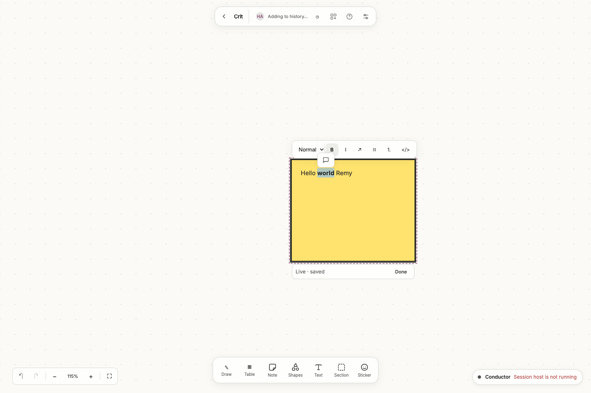
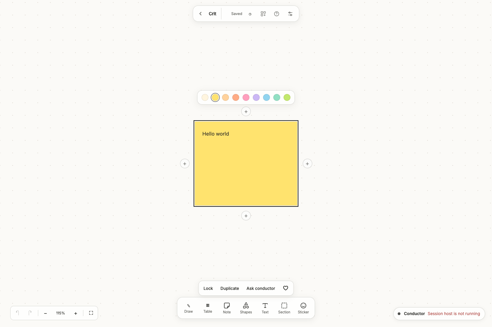
Templates and bulk notes
Open Templates and bulk notes in the top island for a visual picker. The Templates and Sticky notes from a list tabs keep the two flows separate. Opening content or settings finishes the current text edit and waits briefly for it to save, so a second click is unnecessary. A blocked save keeps the draft and explains why the tool cannot open yet. Choose Brainstorm, Retrospective, or Decision flow to add editable sections, sticky notes and, for a flow, labeled connectors. Templates add beside your selection or in the visible area. Existing content stays in place, and the view frames the new selection.
In Sticky notes from a list, enter one idea per line. Blank lines are ignored; leading bullets and numbered-list markers are removed. Up to 50 notes, each under 5,000 characters, are arranged in three columns with room for the tallest note in each row. The dialog shows the note count before insertion. Each template or list is one Undo / Redo action. Readers and commenters cannot insert content.
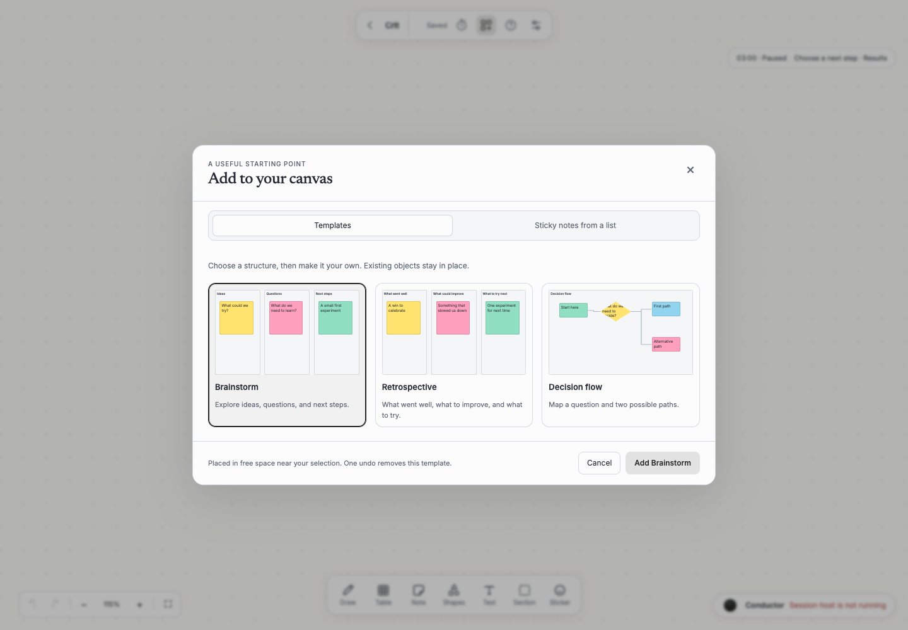
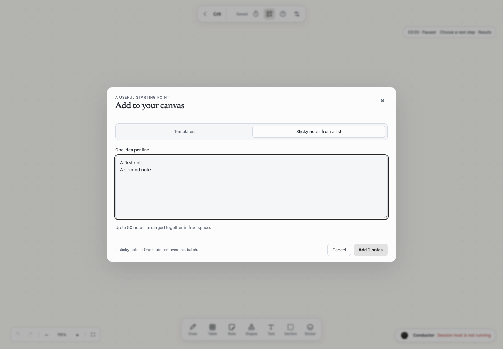
Ask the conductor for a retrospective, a brainstorm, a decision flow, or a set of sticky notes. Its think_read answer includes the available templates. think_apply accepts content: {template: "retro", x: 0, y: 0} or content: {text: "First idea\nSecond idea", x: 0, y: 0} in place of ops, together with the usual board reference, revision and request key. Direct MCP whiteboard_read and whiteboard_apply offer the same catalog and content input. The conductor chooses coordinates from your selection and visible area, and uses its existing permission checks, authorship, Show and Undo actions. It requires the session host to be running.
Find a shortcut
Help or ? opens a searchable keyboard guide. Search by action or group, such as “duplicate” or “zoom”; empty groups disappear and no-match searches explain how to recover. Keys follow your platform. Escape or Done closes the guide and returns focus to the control or canvas that opened it.
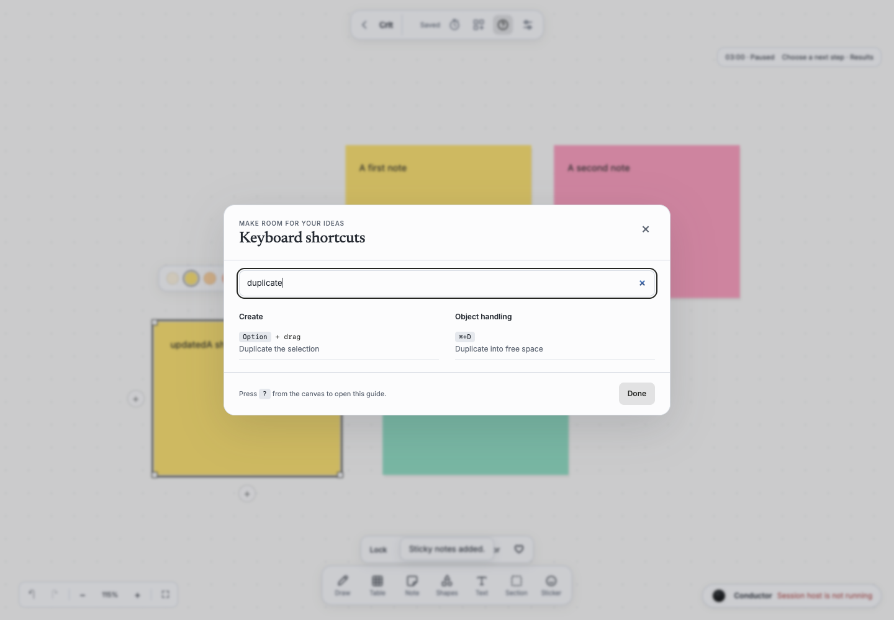
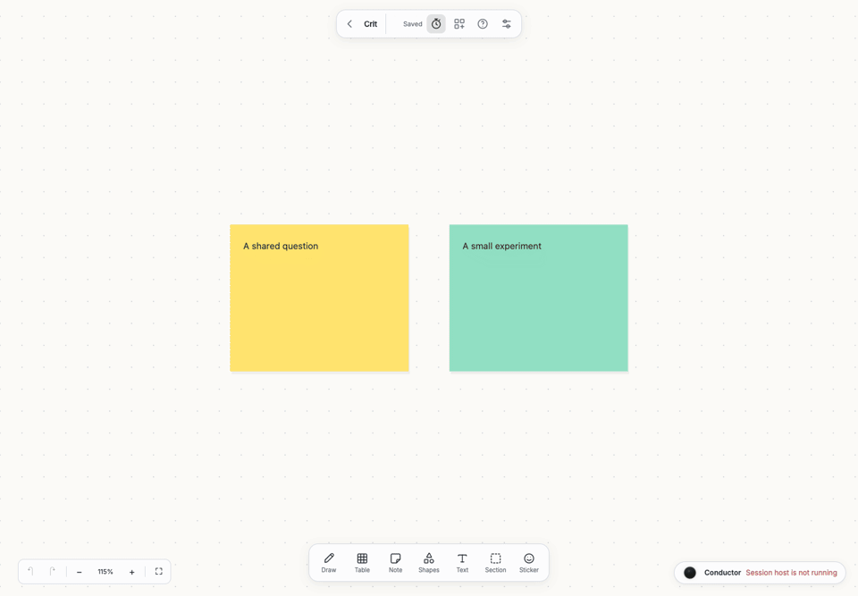
Canvas settings
A way back to the canvases, the canvas name, the product switcher, presence, save status, help and settings sit together in a compact floating island at the top center, in three groups set apart by hairlines; it draws no mark, since the workspace's one brand point is the app's title bar. The tools (Draw, Table, Note, Shapes, Text, Section, Sticker) sit in an island of the same sheet at the bottom center, each a glyph with its label; a selected object's actions (react, comment, Create issue, Open issue, Open link) and a selection's (Create N issues, Write up) appear in a bar just above it, so nothing but the color bar and the resize handles sits on the object. The canvas fills the viewport behind it. The island shrinks to fit smaller screens, settings open in a drawer beside the canvas, and floating object controls avoid its bounds. Use the island’s settings control to open a side drawer at the canvas's /settings address. The canvas stays visible. Background choices preview live until Save or Cancel; dismissing a changed draft asks whether to keep editing or discard it. Escape, the close control, Cancel and browser Back share that draft protection. A canvas has one name, its title in board.md; the island, the tab (<title> · Hanji Think), the canvas list and every reference read it. Editors rename the canvas in Name; a rename lands in the journal at once and in board.md at the next checkpoint, so the canvas list shows it 1.5 seconds after the last edit. A logo stored by an earlier build stays in the journal but is no longer drawn or offered. A page written up before a rename keeps the label it was written with, and its link still resolves. Save applies the changes; Cancel returns to the canvas without applying them. Stale concurrent settings are rejected and the draft stays visible. Readers and commenters may view settings but cannot change them.
Compare Dots (default), Paper and Plain under Canvas appearance. The background is the suite's paper (#f5f6f8), the same as Document's and Plan's. Side-by-side swatches and a larger preview distinguish fine paper grain, a soft dot grid and a smooth surface before saving. Cached procedural tiles are anchored to canvas coordinates: dots and paper grain move with panning and scale with the content during zoom. Tiles use discrete physical resolutions to stay crisp at higher zoom and display densities. Settings swatches remain fixed previews. Fiber is retired from the picker; old saved Fiber settings display Paper until another choice is saved. Think has a light palette, drawn in the workspace's accent (Settings, Appearance) the next time a canvas loads. The appearance is durable in the canvas's journal, separate from Git canvas content; include the data folder in backups.
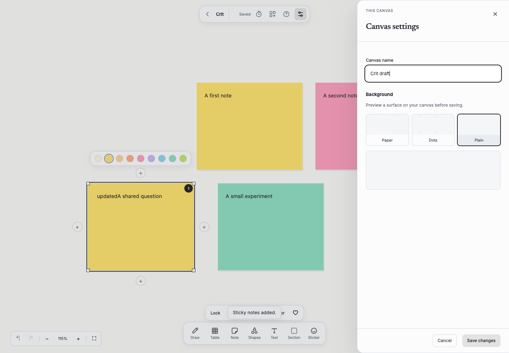
The canvas list
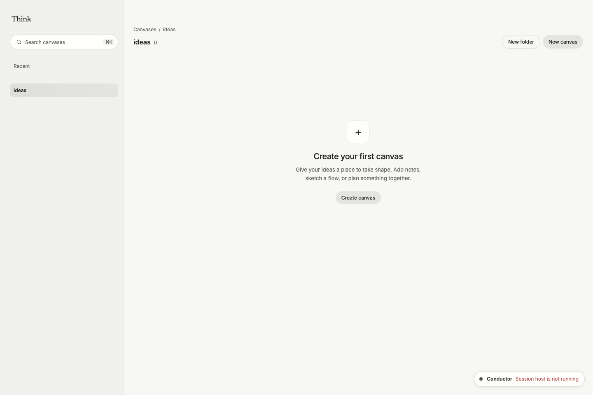
An empty folder offers Create your first canvas, with a Create canvas button that opens the creation dialog for that folder. Readers see No canvases yet without a creation action. The creation dialog and toolbar now say New canvas.
The list at / is Recent: every canvas of every mount you can read, newest change first. Each mount, and each folder in it, has a list of its own (/b/<mountPath>, /b/<mountPath>/<folder>) with its canvases and its sub-folders as cards and a breadcrumb above; a sidebar on the left, Document's sidebar in Think (the same width, resizable by its edge, with Plan's type), holds the product's name, the product switcher and the shared Search… field that filters the canvases on the page (⌘K focuses it), then Recent and the folders of canvases, with compact spacing between single-row sections (under each mount's name when you see several), so a folder is one click away. New folder on Recent, a mount's or a folder's list makes a folder of canvases there (at the top of the mount from Recent) (git keeps it once a canvas lands in it; until then it is this machine's), and New canvas makes the canvas in the folder listed. A canvas keeps its address when its title changes; moving a canvas between folders is a git mv for now. Grants reach a folder of canvases or one canvas at any depth (see Permissions).
A list is a canvas of canvases: under a head line that names the workspace's canvases (or each mount, with several) and counts them, a card per canvas shows a preview of the canvas (its objects as rectangles in their colors, read from the canvas's files at the last checkpoint; an empty canvas keeps a dotted tile), the canvas's title, its folder and when it last changed. The sidebar's foot links the owner to the workspace's Settings in a browser; the app's title bar holds the gear, and Activity for every product. New canvas opens a dialog: the title comes first and the folder follows it until you edit it; the server picks the first free folder, and a refused form comes back open with its reason beside the field.
What saves where
Every accepted edit is durably journaled in the canvas's own file in the data folder, think-<mount>-<hash>.db, independently of Git. The journal follows the folder path and remembers its canvas, so rename a canvas folder only after a checkpoint, and expect to set its logo and appearance again (its name is the title in board.md, which moves with the folder). The header reads Saved once this server has an edit, Adding to history… while a Git checkpoint runs, In history once it has landed, and History retry pending when a checkpoint will be tried again; "History" is the word Document's and Plan's History use for the same commits. The server automatically materializes Markdown and makes a local Git checkpoint after 1.5 seconds without an accepted browser action. A 15-second poll also catches CLI/MCP and external file edits, including when no browser is connected. Clean polls create no commit; failures are reported and retried on a later poll. A checkpoint commits as the person whose edits it holds, with Hanji Think as the committer; several people's edits, or a hand edit to the files beside someone's, commit as Hanji Think with a Co-authored-by: line per person. Checkpoints never push. Back up the data folder as well as the repository: a Git clone holds the last successful checkpoint; edits journaled after it live only in the data folder. The explicit checkpoint API and MCP tool remain available to editors; a checkpoint made that way carries the trailer Checkpoint: manual in its commit, so a reader of the history can tell it from the automatic ones.
board.md version, board identity, title, connectors
nodes/<stable-id>.md geometry, type, comments, reactions, Markdown body
assets/<sha256>.<extension> local image bytes
The Markdown frontmatter is versioned YAML, with Markdown bodies for notes, shape labels, standalone text and section titles. Text uses kind: text with optional fontFamily (sans, serif, mono, hand), fontSize (12–120), fontWeight (400 or 700), fontStyle (normal, italic), textAlign (left, center, right) and textColor (ink, muted, plum, blue, coral). Sections use kind: section and ordinary geometry up to 8000 pixels per side; membership is derived, not stored as a second child list. Shapes use kind: shape and shape: process | decision | terminator | input-output | ellipse | hexagon | triangle, plus the existing x, y, w, h, color and stable id. Create a shape through the ordinary create operation; patch its body, dimensions, position or color through patch. Shape patches also accept shape, shapeFill (boolean), shapeStroke (solid, dashed, dotted) and shapeWeight (1, 2 or 3). Unknown shape types and mixed sticker/image semantics are rejected. Each file has a reserved hanji_base fingerprint identifying the file snapshot an external editor read. Preserve this field; the service updates it at checkpoints. The manifest body is a generated title; write substantive content in node bodies. Stable IDs anchor connectors and comments. An attached sticker stores anchor: <sticky-id> and its x/y as offsets from that sticky; unattached objects use canvas coordinates. Sticky height is derived from body and width; the stored h is refreshed by UI/API content and width edits, while older file geometry remains readable. Text and width edits can merge because height is derived after reconciliation. Unknown metadata survives round trips. Semantically unchanged files retain their exact source bytes at checkpoint, including YAML comments. Changed frontmatter is deterministically serialized and may normalize formatting: the canvas codec does not claim the serializer package's universal byte-fidelity guarantee.
Core config.db holds the mounts, people and grants. Each canvas's journal holds its revisions, idempotency receipts and canvas settings; it is durable, so back it up with the data folder. Think's keys and sessions live in think-keys.db beside it. Cursor presence, viewport and drag previews are transient. Shared-text sessions, document versions, step logs and idempotency receipts are durable journal state, backed up with that journal. No external object store, paid service, or external agent execution is involved, and Think pushes no canvas to a remote. A page written up into a clone mount is pushed to its origin; on a local mount it is committed in place, as a save in Hanji Document is.
Collaboration and file editing
Browser, CLI and MCP writes share the same operation service. An operation includes a base revision and unique request key. Disjoint stale edits merge by stable ID and field; competing changes to the same scalar/text field produce a conflict. Geometry and whole-body API/file changes use server-ordered object collaboration. Open browser text editors use the ProseMirror collaboration protocol: steps are versioned, rebased on the clients, and applied under the same journal lock as other canvas edits. Peers see accepted operations, cursors and colored outlines around one another’s selected objects. Click a person’s avatar to follow their viewport. Following … · Stop makes the state visible; Stop, panning, zooming, selecting or editing returns control to you. Following pauses around open dialogs and editors, and ends if the person leaves. Cursor, selection and viewport presence expires and is never written to the journal. Editors also stream transient drag and resize previews, for up to 50 objects at a time. Previews affect what peers see but create no canvas revision. Release saves the final geometry; cancellation, disconnect or expiry clears the preview. A person cannot begin moving an object while a visible peer preview owns it; server revision conflicts remain the final check for simultaneous starts.
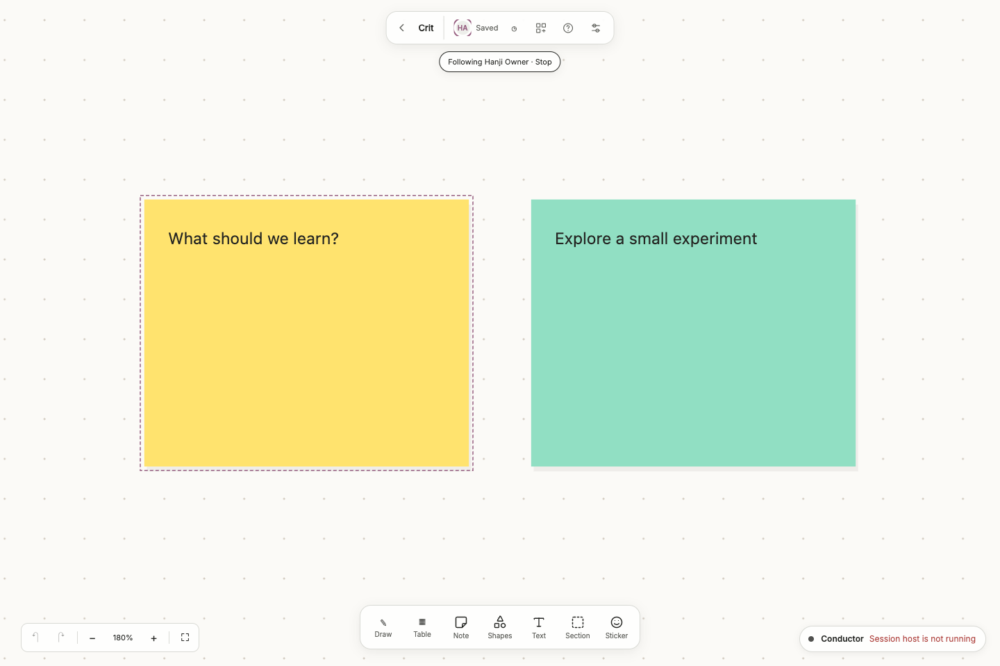
An unsent browser operation is kept in that tab's session storage and retried on reconnect. Only one outstanding batch is allowed per tab. A conflict retains the request, offers an edit-file download, and requires an explicit discard before another operation can be submitted. Unconfirmed rich-text steps stay in the open editor and retry with the same request key after a network failure. Confirmed text, document versions and step receipts are in the journal. The open editor is not an offline document store; use Done to finish and wait for outstanding steps to send. Routine save messages stay hidden; connection problems and retained drafts remain visible. Browser storage failure is reported.
External file changes are reconciled semantically against their recorded hanji_base snapshot, even when a newer checkpoint landed after the agent read the file. Unknown or missing bases are rejected for existing files; restore the source and checkpoint before editing a legacy file. A file edit to text can coexist with a browser move. Use CLI/MCP delete for deletions: a missing file cannot carry its base, so raw file deletion is rejected. Wait for a successful automatic checkpoint, or request one through MCP, between successive conflicting text rewrites from a file editor so its base advances. An overlapping external edit raises an error and leaves both disk and journal versions intact. For now, resolve that conflict in the source files; there is no full three-way conflict editor. Use atomic file replacement or the CLI/MCP while people are editing. Arbitrary filesystem writers do not participate in the service's advisory lock; simultaneous raw writes during a checkpoint are not a supported transactional workflow. Malformed files stop import rather than replacing live state with an empty canvas.
Checkpoint/restart and fresh-clone recovery are tested. Recovery after an interrupted checkpoint refuses to overwrite a new external edit. This is not a multi-server service or a guarantee against filesystem/power failures. Keep backups of both durable stores.
Agents
An agent holds a Think key. node --import tsx packages/whiteboard/src/main.ts key --agent scribe prints one for the handle scribe; it acts with the owner's access on every canvas and is named agent_scribe in receipts and scribe in commits. Printing a key for the same handle again replaces the old one, and key --revoke scribe ends it. Set WHITEBOARD_TOKEN to the key and name the canvas with --board <mountPath>/<folder>:
node --import tsx packages/whiteboard/src/main.ts read --board boards/crit
node --import tsx packages/whiteboard/src/main.ts ops --board boards/crit --file /path/to/edit.json
node --import tsx packages/whiteboard/src/main.ts mcp --board boards/crit
MCP exposes whiteboard_read, whiteboard_apply, and whiteboard_checkpoint. Read first to get rev, then send a batch:
{"key":"agent-edit-001","base":7,"ops":[{"kind":"patch","id":"question","fields":{"body":"# A new possibility\n\nA small experiment."}}]}
Operations include create, patch, move, transform, group, lock, delete, link, relink, unlink, comment, react, timer, voting, and vote. move {ids, dx, dy} expands selected sections and moves every member once in the same revision, including through CLI/MCP. Use this operation for group movement. A direct geometry patch or Markdown file edit changes only the explicit frame; it does not implicitly rewrite other files. Competing child geometry edits conflict with stale section moves, while independent text edits merge. Comments derive identity from the credential, never the request payload. link and relink also accept stroke (solid, dashed, dotted), width (1, 2 or 3), start/end (none, arrow, dot), label (up to 200 characters), routing (curve, straight, elbow), attachment (auto, fixed), and fromPort/toPort (auto, north, east, south, west). Ports pin attachments only with attachment: fixed; legacy connections retain automatic geometry. relink takes a connector id and at least one endpoint or option change; unlink removes only that connector. These editor-only operations are available through the same HTTP, CLI and MCP mutation path. patch cannot overwrite authors, comments or reactions. A sticky may carry ref, a Plan issue key such as HNJ-12: patch sets it and ref: null clears it, and a note created with ref and an empty body puts an issue on the canvas as a card. The file holds the key only; what the issue says comes from Plan. A duplicate request key is idempotent; reusing it for a different request is rejected. Local filesystem access is a trusted operator capability, not a role sandbox.
Moving a canvas from the first launcher
The first launcher kept one canvas at the root of its repository, with a state folder beside it. That canvas becomes a folder of a think mount in three steps, run once with the old server stopped (wait for its header to read "Saved" first, so the journal and the files agree). Register the repository as a think mount (--kind think is needed while the canvas still sits at the root), move the canvas, and start the new launcher:
pnpm hanji add-mount boards /path/to/board-repo boards --local --kind think
node --import tsx packages/whiteboard/src/main.ts migrate-board --board boards/crit --state /path/to/old/state
node --import tsx packages/whiteboard/src/main.ts --port 4104
migrate-board first copies the old board-state.db to the folder's journal in the data folder, which keeps the canvas's revisions, receipts and settings and drops the old access keys, then moves board.md, nodes/ and assets/ into crit/ with git mv, in one commit as Hanji Think, so the canvas has a folder address. It checks before it writes: the state folder must be this canvas's, the old journal closed and with no unfinished checkpoint, and the canvas's files committed with nothing untracked. A run that stops partway is finished by running it again. Until the canvas has moved, each run copies the journal again, so edits made on the old server after a stopped run come along; a journal at the new name that holds another canvas is refused with the sentence to move it aside. A canvas already in its folder with its journal is refused as already migrated. The old access links stop working: the launcher prints the owner's link, and agents get keys with key --agent. Share the new address, /b/boards/crit, with the team. The old state folder is left as it was, apart from the lock file the run holds while it works and the empty -wal and -shm files that SQLite leaves beside board-state.db and config.db when it reads them; never start the first launcher on it again, since its access links still open that copy.
Current limits
There is no production invitation/revocation UI, per-node permission system, remote sync, nested object groups, real-time table-cell merging, upload tool in MCP, offline standalone HTML export, or cross-product search integration yet. The existing core rendering, grants, Git and lock primitives are reused, and Think signs people in the way Plan does. Plan’s embedded agent-session UI remains separate; agents connect through CLI/MCP or files. Revision snapshots and shared-text step logs are retained without compaction, so storage and import cost grow with usage. Large-canvas timings and the exact tested browser are recorded in packages/whiteboard/VERIFICATION.md.
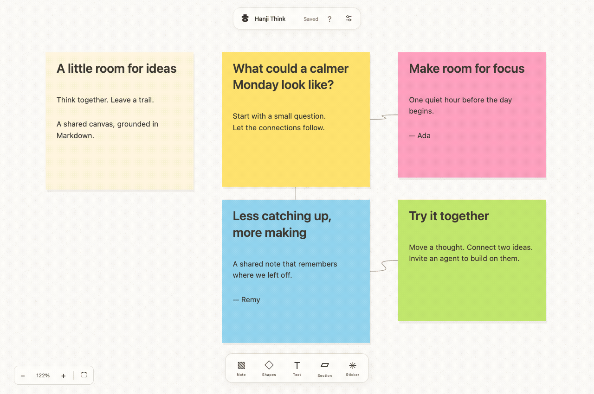
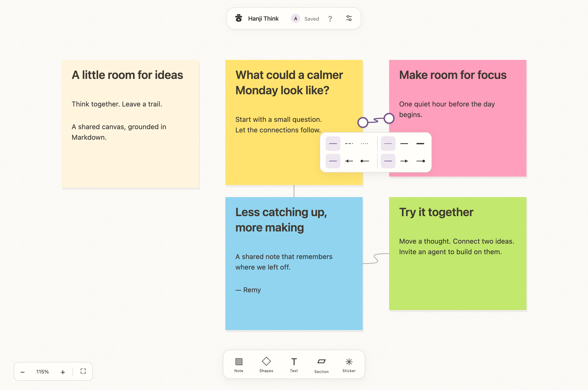
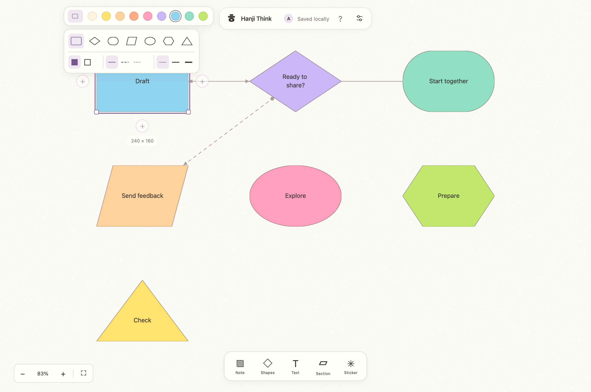
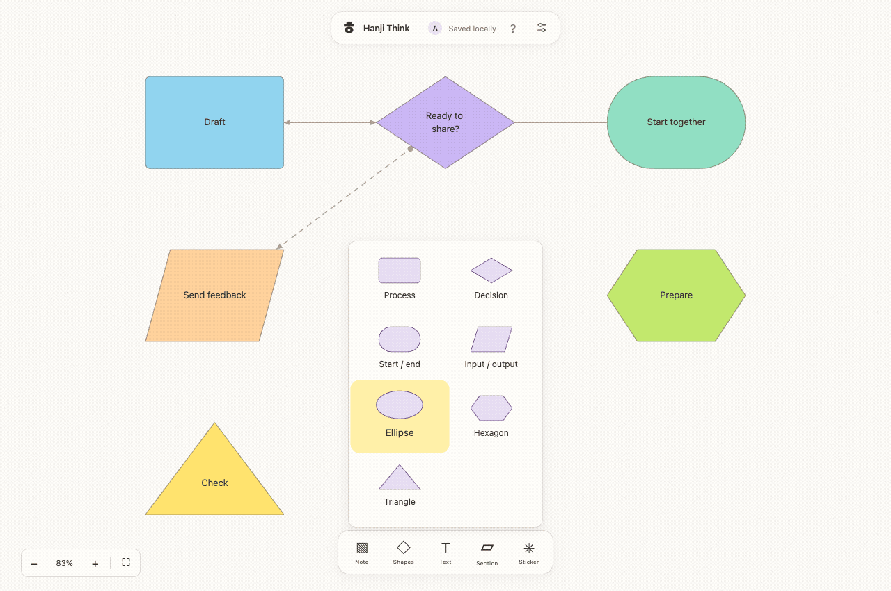
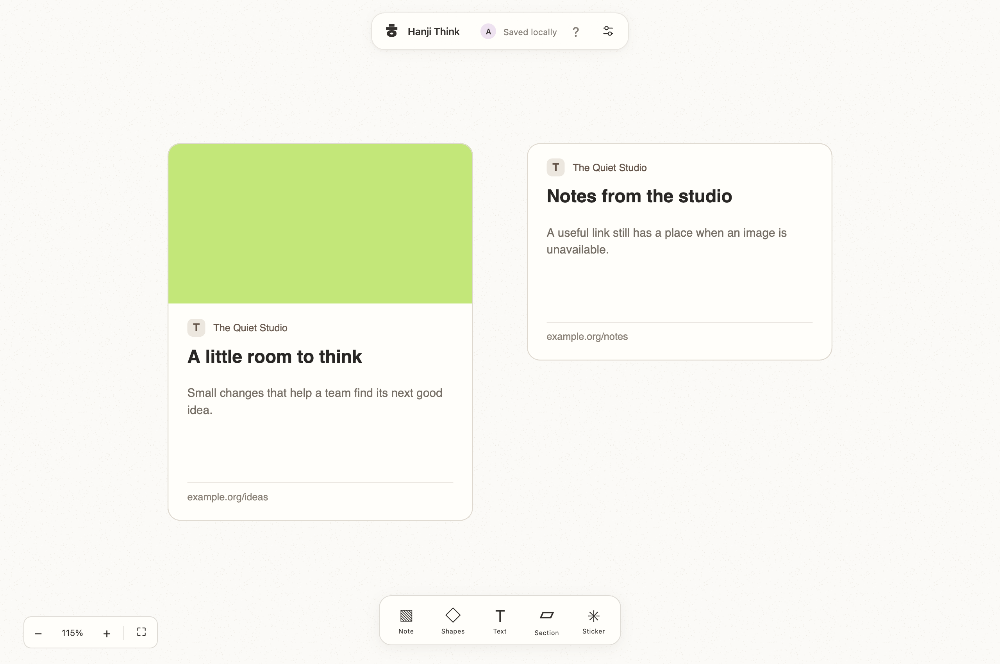
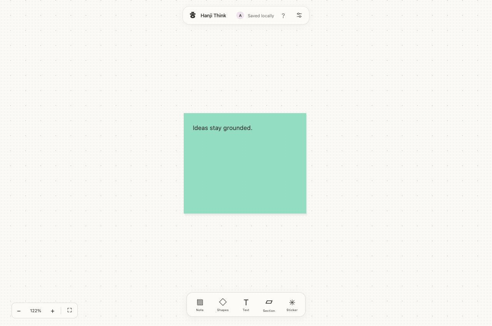
Reactions form a compact, centered fan below each object, including narrow stickers. Gently overlapping tiles stay in one row, with count badges painted above the fan to keep them readable. The existing pop animation and reduced-motion preference remain in effect.
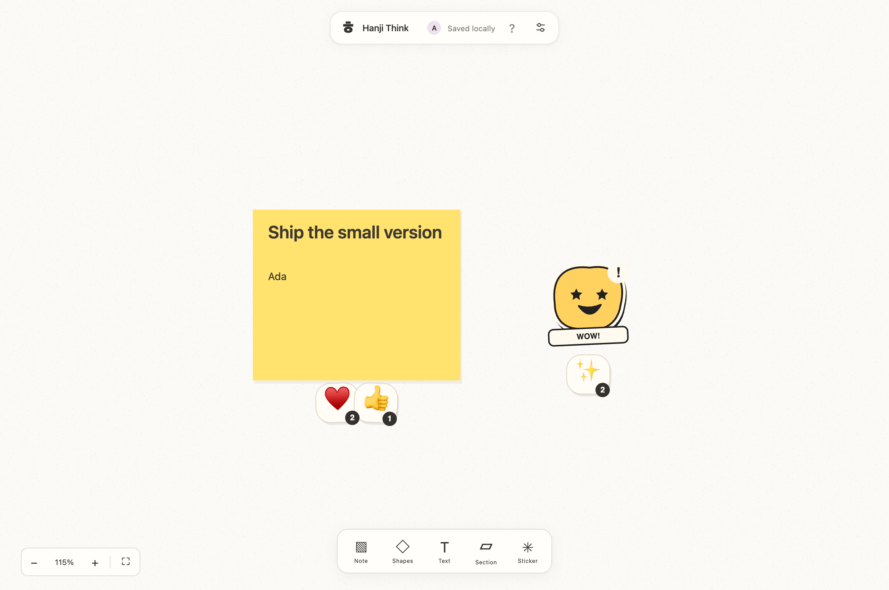
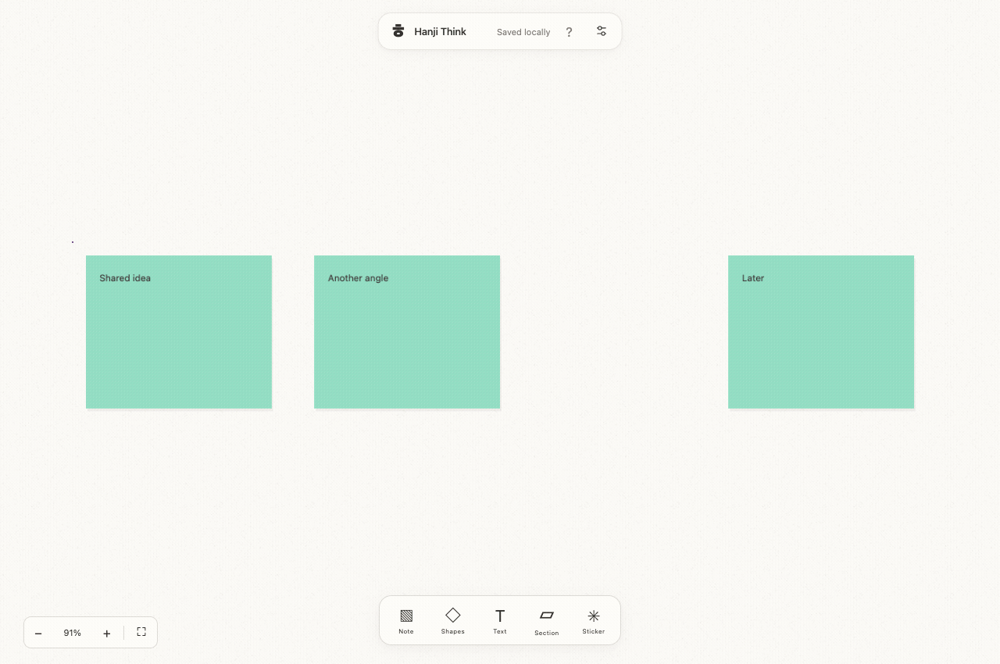